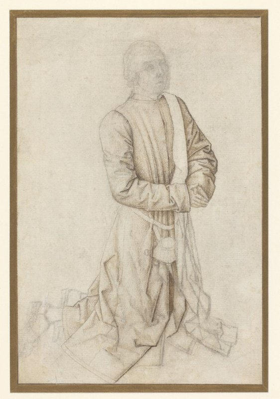
Vérité (projetée)
7(+5) — (no own text)
31A2331 — kneeling on both knees
T_star (H-F1 0.000)
4 — Society, Civilization, Culture
61B — historical persons (portraits and scenes from the life)
TK (H-F1 0.526)
31A231 — standing figure
4 — Society, Civilization, Culture
61B — historical persons (portraits and scenes from the life)
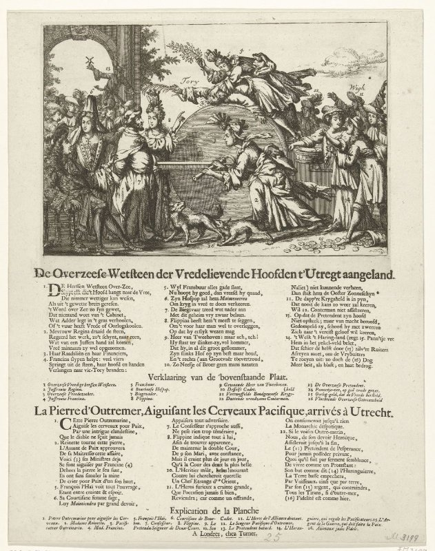
Vérité (projetée)
47C55 — sharpening, grinding (industrial processes)
44C312 — political caricatures and satires
T_star (H-F1 0.182)
4 — Society, Civilization, Culture
TK (H-F1 0.706)
43 — recreation, amusement
44C312 — political caricatures and satires
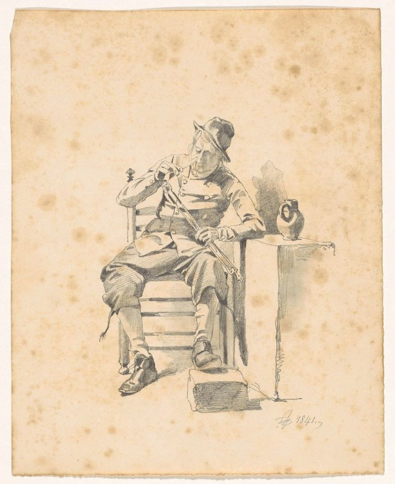
Vérité (projetée)
41C741(+1) — (no own text)
T_star (H-F1 0.143)
31A235 — sitting figure
4 — Society, Civilization, Culture
TK (H-F1 0.632)
31A235 — sitting figure
41C741 — pipe ~ tobacco
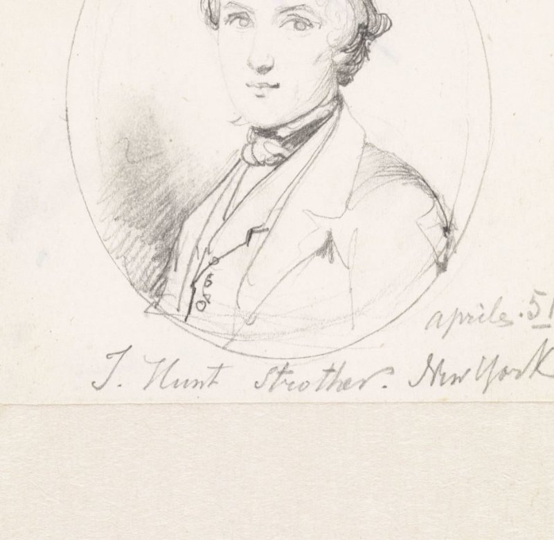
Vérité (projetée)
61B2 — historical persons
T_star (H-F1 0.727)
61B111 — anonymous historical person portrayed alone
61B2 — historical persons
TK (H-F1 0.273)
31D1 — the ages of man
4 — Society, Civilization, Culture
61B111 — anonymous historical person portrayed alone
61B:31A2212(+1) — (no own text)
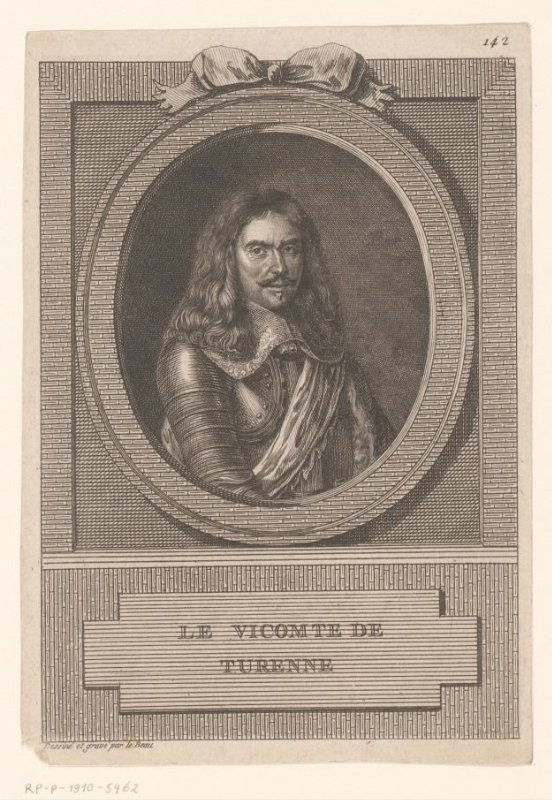
Vérité (projetée)
45D311 — commander-in-chief, general, marshal
61B2 — historical persons
T_star (H-F1 0.286)
45 — warfare; military affairs
48C — the arts; artists
TK (H-F1 0.667)
45 — warfare; military affairs
61B — historical persons (portraits and scenes from the life)
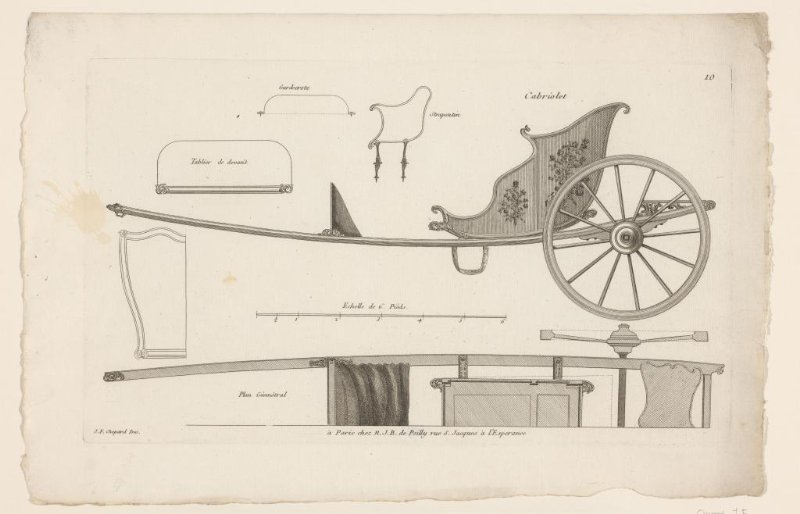
Vérité (projetée)
46C144 — four-wheeled, animal-drawn vehicle, e.g.: cab, carriage, coach
T_star (H-F1 1.000)
46C144 — four-wheeled, animal-drawn vehicle, e.g.: cab, carriage, coach
TK (H-F1 0.667)
43C241 — sledge, sleigh (winter sports)
46C144 — four-wheeled, animal-drawn vehicle, e.g.: cab, carriage, coach
49 — education, science and learning
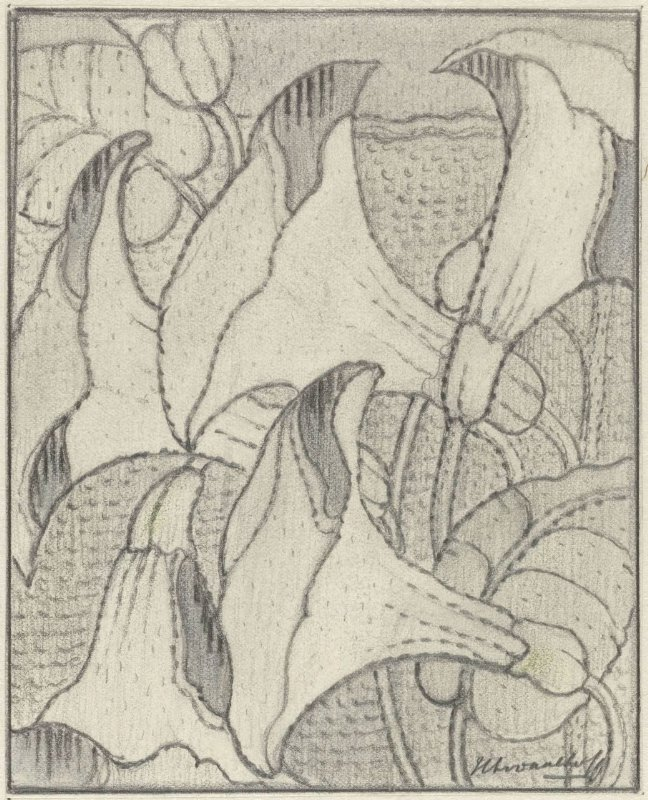
Vérité (projetée)
25G41(LILY) — flowers: lily
48A9833 — flowers ~ ornament
T_star (H-F1 0.143)
4 — Society, Civilization, Culture
TK (H-F1 0.471)
25G — plants; vegetation
4 — Society, Civilization, Culture
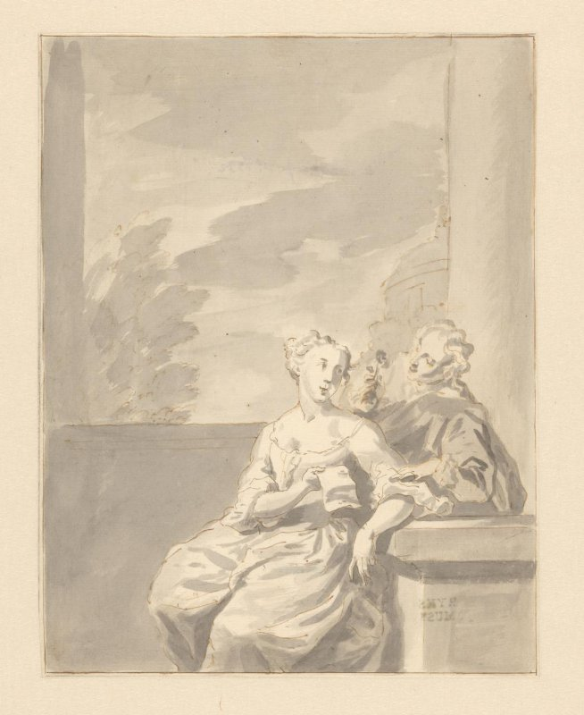
Vérité (projetée)
33C23 — couple of lovers
T_star (H-F1 0.000)
48 — art
TK (H-F1 0.286)
3 — Human Being, Man in General
4 — Society, Civilization, Culture
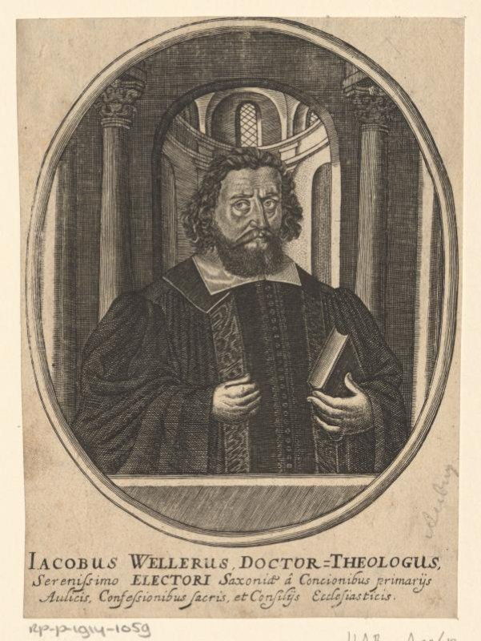
Vérité (projetée)
11L53 — theologian
61B2 — historical persons
T_star (H-F1 0.625)
11L53 — theologian
49 — education, science and learning
TK (H-F1 0.900)
11L53 — theologian
49 — education, science and learning
61B2 — historical persons
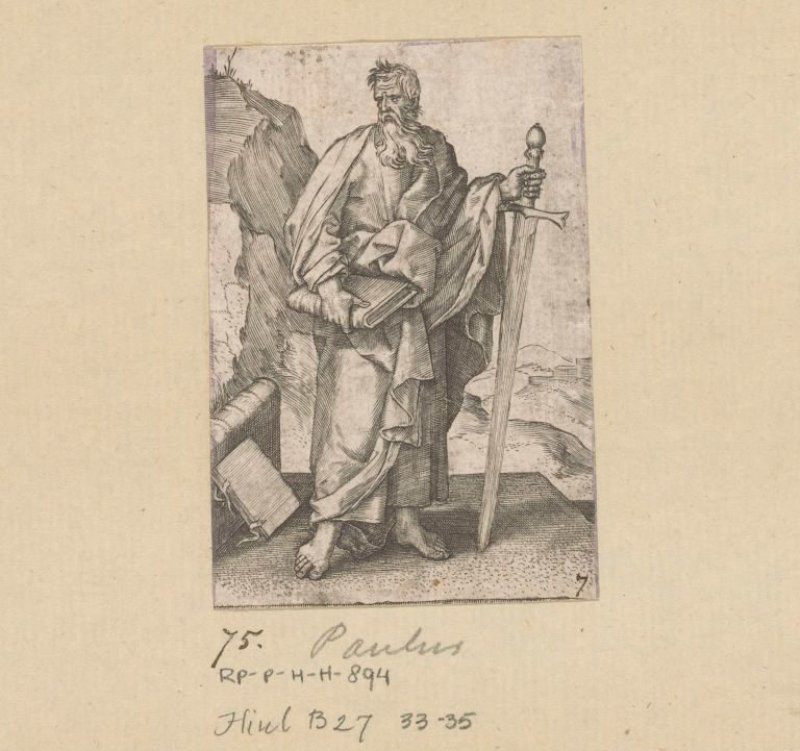
Vérité (projetée)
11H(PAUL) — the apostle Paul of Tarsus; possible attributes: book, scroll, sword
T_star (H-F1 0.615)
11H(PAUL) — the apostle Paul of Tarsus; possible attributes: book, scroll, sword
11H(PETER) — the apostle Peter, first bishop of Rome; possible attributes: book, cock, (upturned) cross, (triple) crozier, fish, key, scroll, ship, tiara
71 — Old Testament
73F — lives and acts of the apostles of Christ; epistles
TK (H-F1 0.889)
11H(PAUL) — the apostle Paul of Tarsus; possible attributes: book, scroll, sword
11H(PETER) — the apostle Peter, first bishop of Rome; possible attributes: book, cock, (upturned) cross, (triple) crozier, fish, key, scroll, ship, tiara
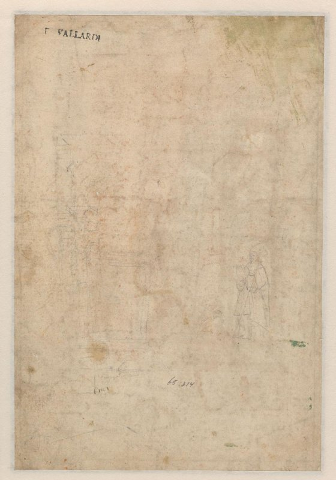
Vérité (projetée)
11Q713 — interior of church
T_star (H-F1 0.267)
11 — Christian religion
31D1 — the ages of man
48C — the arts; artists
TK (H-F1 0.000)
31A2 — anatomy (non-medical)
31D1 — the ages of man
41 — material aspects of daily life
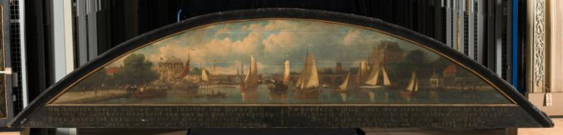
Vérité (projetée)
25H223 — sluice, weir
25H213 — river
25I6 — landscape with bridge, viaduct or aqueduct
25II1 — city-view in general; 'veduta' - II - ideal city
T_star (H-F1 0.250)
25I1 — city-view in general; 'veduta'
46C1 — traffic on land
46C223 — harbour
46C24 — sailing-ship, sailing-boat
TK (H-F1 0.500)
25H213 — river
25I1 — city-view in general; 'veduta'
46C1 — traffic on land
46C223 — harbour
46C24 — sailing-ship, sailing-boat